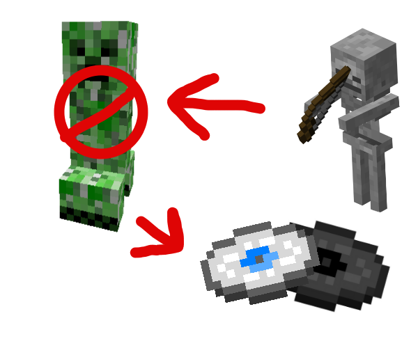

Rock Dubstep Disc
Rock Dubstep is one of the three Music Discs added to Onyxpack.
Credit
This song was composed by lolohen2249, a fellow Onyx player, woo!
Aquiring
You can find Rock Dubstep discs as you would most other discs, getting a skeleton to kill a creeper. A music disc farming tutorial is here. A simple diagram bellow also shows the basic process.
